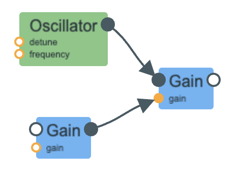

For part 2, I replicated the ball bounce sound in Designing Sound.
There are two major parts to the code.
The first part is the frequency modulator, which simulates the "bounce" by alternating between turning on the frequency of the oscillator (when it hits the ground),
and zeroing the frequency (when it is in the air).
As the ball bounces, the interval between the bounces becomes smaller and smaller.
My work around for this was to use a setInterval() function and modify the intervalDuration dynamically.
This allowed me to emulate the initially slow bounce of the ball to the rapid and small bounces towards the end.
As the ball comes to a halt, I ramp the gain to zero for a smooth transition into silence.
The second part was the ADSR envelope for the impact sound.
I connected a gain node holding the ADSR envelope to another gain node to which the oscillator was connected to.
In this way, I tried to add more realistic details to the short beat from when the ball comes into contact with the ground until it goes back up into the air.
Overall, it was an interesting experience creating a sound from scratch.
I was able to learn just how much detail and thought need to be put into one simple sound.